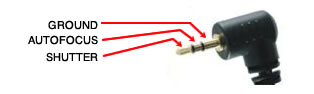
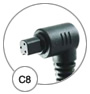
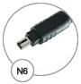
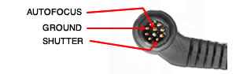
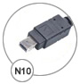
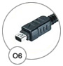
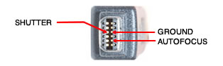

In this page you can find how to connect some cameras to Photoduino, but the best option is buy a cable for your camera model. There are some links to shop online your cables.
- Canon EOS 50d 7d 5d 1ds
- Pentax, Samsung
- Nikon d700 d300s d3x d3s
- Nikon d7000 d5100 d3100 d90
- Nikon d80 d70
- Olympus e-pl2 e-p2 e-p1 e-620 e-520
- Olympus e-300 e-20 e-10 e-1
- Panasonic, Lumix and Leica
- Sony Alpha and Konica Minolta
Also you can find in the same store the flash cables.
| Picture | Name | Brands | Pinout |
|---|---|---|---|
 |
C6 | Canon, Contax, Pentax, Samsung |  |
|  | C8 | Canon |  |
|  | N6 | Nikon | |
 |
N8 | Nikon, Kodak, Fuji |  |
|  | N10 | Nikon | |
 |
S6 | Sony, Minolta | |
|  | O6 | Olympus |  |